"Không có phụ nữ xấu, chỉ có phụ nữ không biết làm đẹp "- Trích câu danh ngôn nổi tiếng của LaBruyere để thay lời của Juno - những người góp phần tôn vinh, khơi dậy vẻ đẹp phụ nữ Việt Nam.
Ông Đinh Anh Huân - Chủ tịch Juno phát biểu trong sự kiện Juno ra mắt bộ sưu tập mới
Bạn biết gì về chúng tôi?
Trải qua thời gian hình thành và phát triển Juno đã trở thành một thương hiệu thời trang giày dép, túi xách và phụ kiện, được phụ nữ Việt Nam yêu thích và chọn lựa. Hiện nay, thương hiệu Juno đã phát triển mạnh mẽ với hàng chục cửa hàng trải dài trên toàn quốc và website bán hàng trực tuyến thân thiện, chuyên nghiệp hàng đầu Việt Nam. Không dừng lại ở đó, dịch vụ của Juno luôn mang đến sự hài lòng và quyền lợi của khách hàng luôn được đáp ứng, thoả mãn…
Sản phẩm của chúng tôi có gì nổi bật?
Với mục tiêu không ngừng phát triển và hoàn thiện, sản phẩm của Juno luôn mang đến cho phụ nữ sự tự tin, toả sáng để thành công trong công việc, cuộc sống với phong cách thời trang riêng biệt, ấn tượng. Bên cạnh việc chú trọng đến sự êm ái, giá cả phải chăng, sản phẩm Juno luôn được chỉnh chu trong từng chi tiết, mẫu mã đa dạng, phù hợp mọi hoàn cảnh và mang hơi thở thời trang trong nước, thế giới...
Thế mạnh của chúng tôi?
Chúng tôi có nhà máy sản xuất được đặt tại Huyện Bình Chánh, Thành phố Hồ Chí Minh, Việt Nam. Những sản phẩm giày dép của chúng tôi được chính bàn tay, khối óc của người công nhân Việt có tay nghề cao, tâm huyết, tỉ mỉ trong từng công đoạn sản xuất từ thiết kế mẫu, chọn lựa nguyên vật liệu, kỹ thuật tạo form dáng và sản xuất theo đúng trình tự tiêu chuẩn vô cùng chặt chẽ, chuyên nghiệp để tạo ra những sản phẩm giày dép “Made in Viet Nam” chất lượng, mang đến vẻ đẹp mềm mại, uyển chuyển, chứa đựng linh hồn của người làm ra nó mà ít sản phẩm nào có được.
Cam kết của chúng tôi?
Cam kết của chúng tôi là tạo ra những sản phẩm chất lượng, êm ái, kiểu dáng đẹp, thời trang và giá cả hợp lý…để mọi phụ nữ Việt Nam đều hài lòng khi sử dụng sản phẩm của Juno.
Sứ mệnh của chúng tôi?
Juno sẽ không ngừng đổi mới và phát triển, trở thành người bạn đồng hành thân thiết góp phần vào sự thành đạt, hạnh phúc và thịnh vượng của mọi phụ nữ Việt Nam.
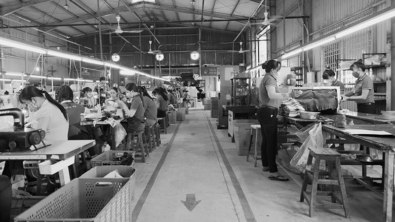 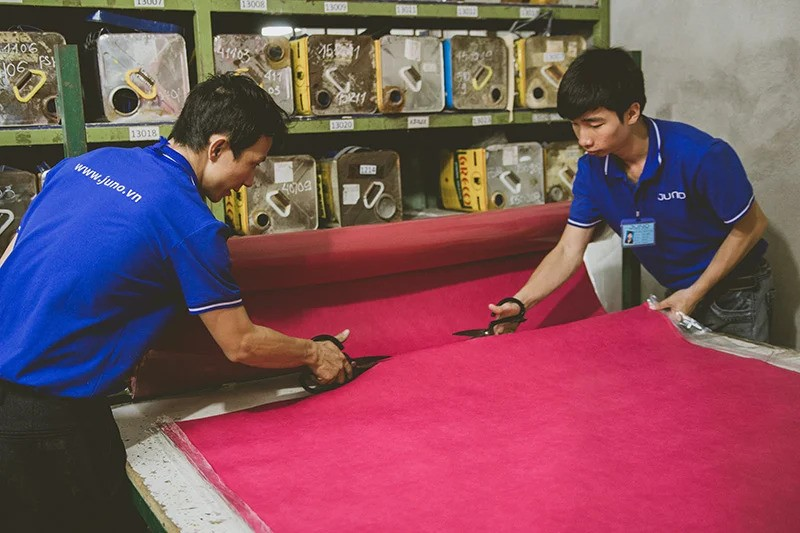 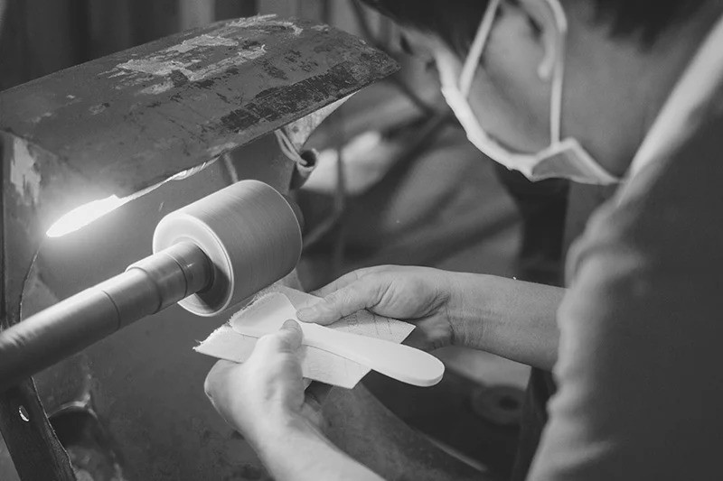
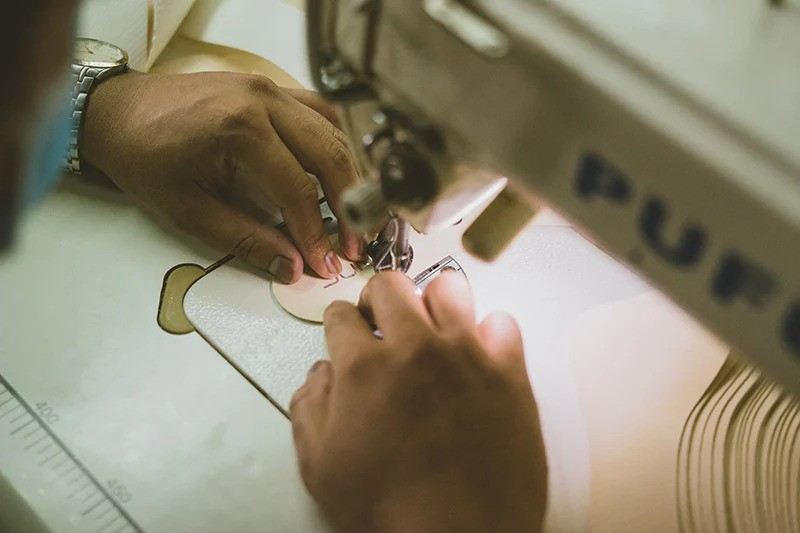
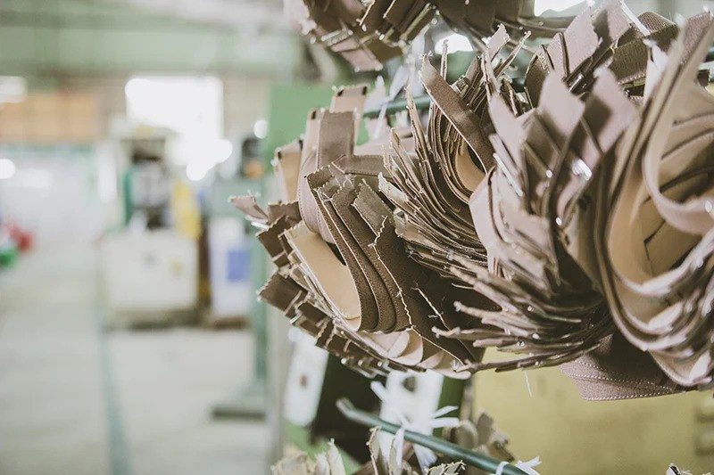
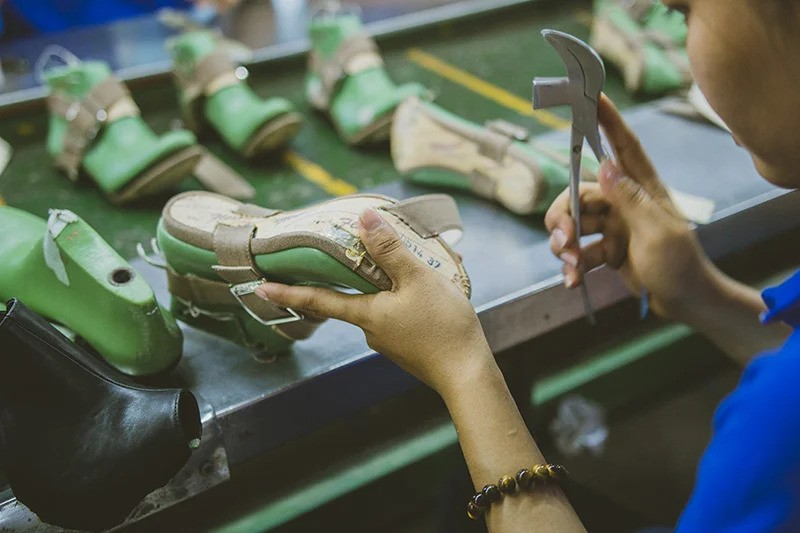
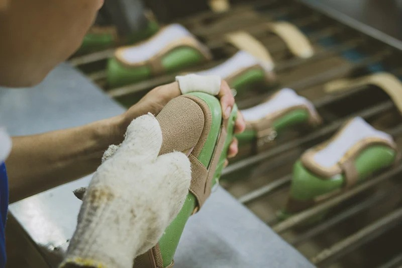
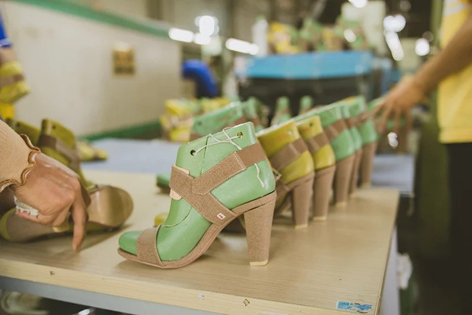
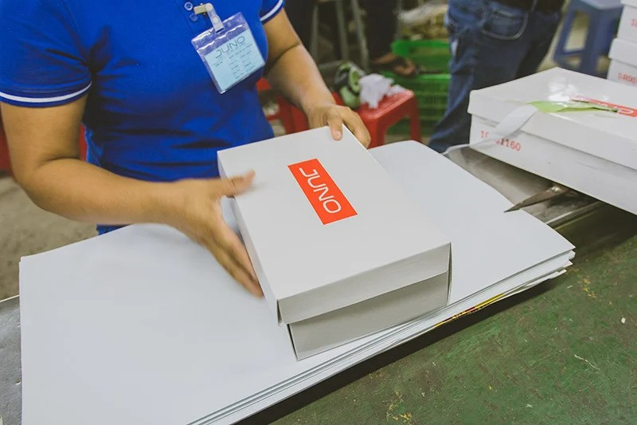
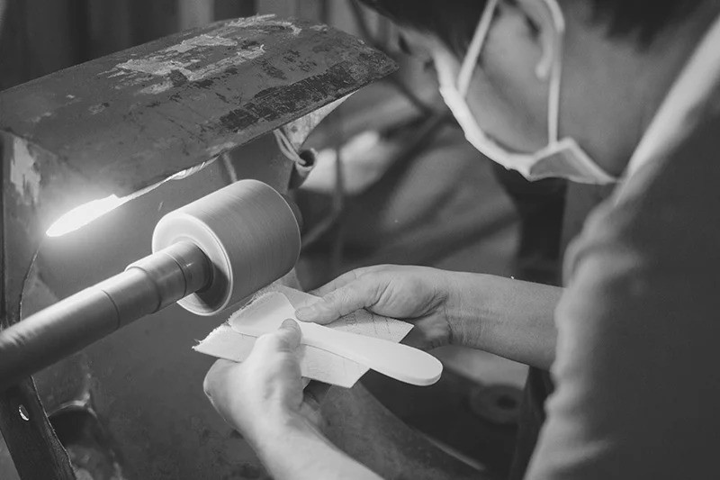
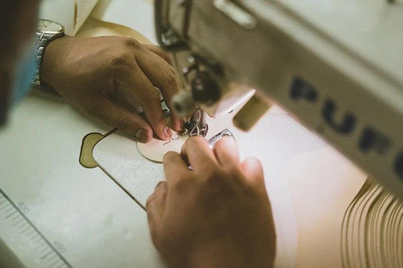
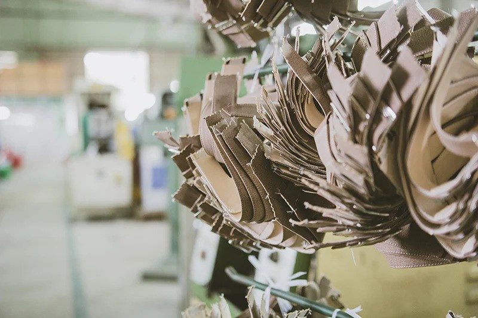
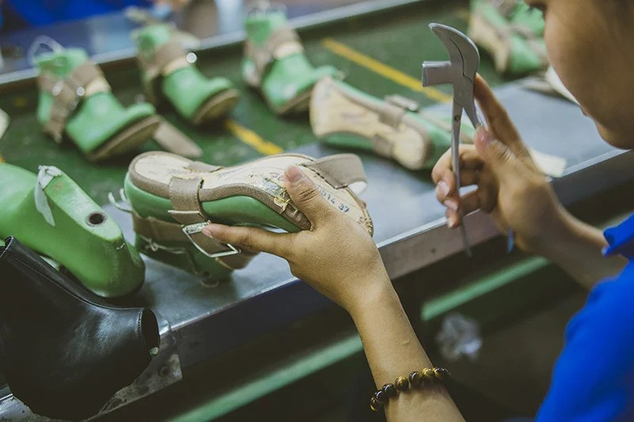
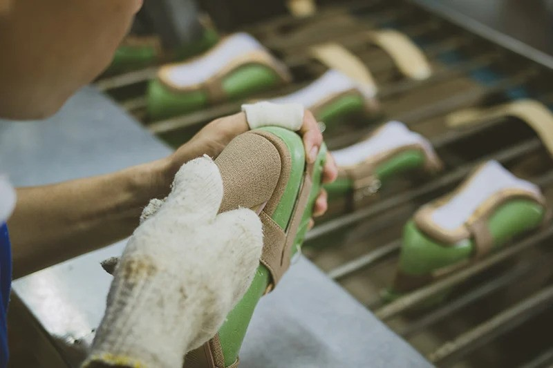
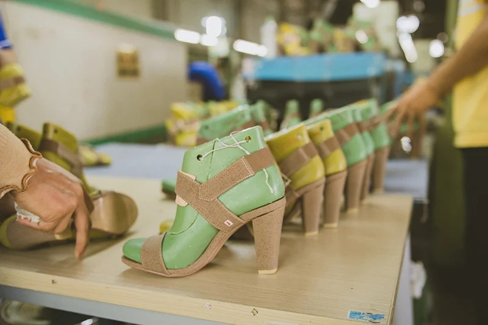
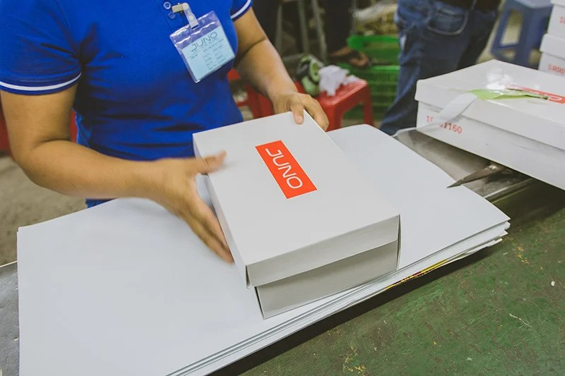